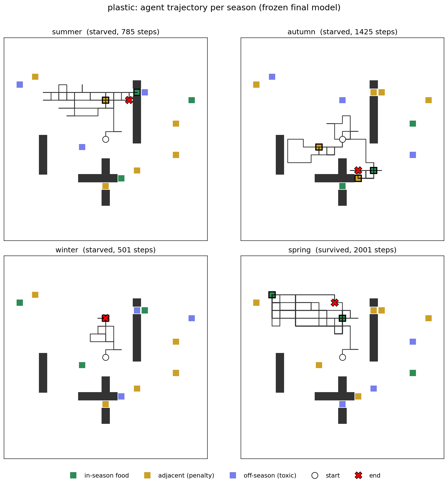
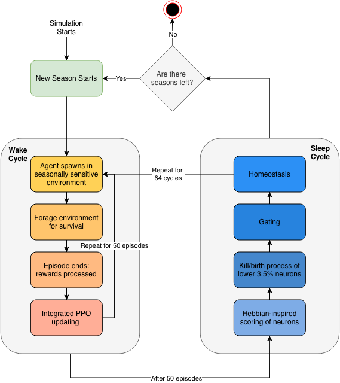
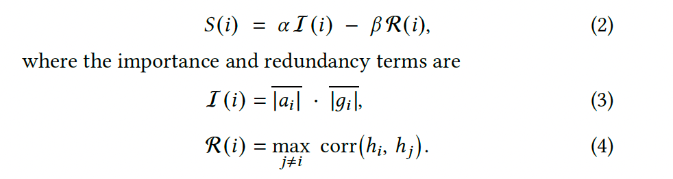
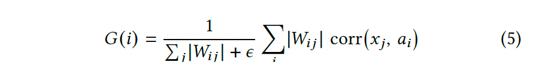
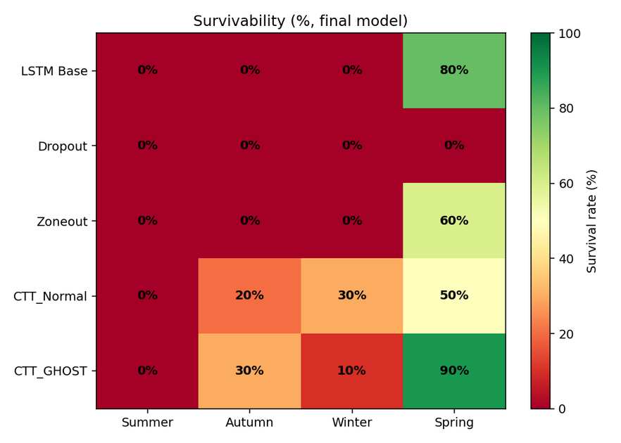

Summary
A significant challenge in neural network design is continual learning: the ability to learn new tasks without catastrophically forgetting previously learned ones. Complementary Turnover Training (CTT) attacks this with a biologically-inspired architecture over LSTMs, where neurons are scored on scales of redundancy and importance, killed and reborn, and slowly reintroduced to the network over time. Before any neuron can be killed it has to be scored, and that score decides which neurons the network keeps.
My half of the project proposes GHOST (Gradient-free Hebbian Observation and Selective Turnover) an originally developed scoring criterion, and evaluates it against the original CTT score and three baselines. GHOST keeps the neurons that fire together with their inputs. It reads only weight magnitudes and the correlation between a neuron and what drives it, so unlike the original score it never touches the gradient. I tested all five models in a reinforcement-learning foraging agent whose rewards reverse across four sequential seasons, and measured how much of each season survived into the next.
The Hebbian criterion is statistically indistinguishable from the original importance–redundancy scoring on every metric and every season, indicating that the scoring criterion is not the source of CTT's benefit. The CTT architecture did, however, retain significantly more of its learned behaviour than standard LSTMs in the middle seasons. For biologically-inspired agent design, this suggests future effort is better directed at the non-stationary learning setting than at refining neuron-selection criteria.
- 5 models: three baselines, the original CTT scorer, and GHOST
- 10 seeds each, every run trained to completion with no policy collapse
- 3,200 episodes per run: four seasons of 800 each
- food→poison the same patch reverses from nourishing to fatal across seasons
The Continual Learning Problem
LSTMs are strong at managing a single long-term sequential task, but weak at continual learning: learn a new task and the weights that solved the old one are overwritten. French describes this by analysing the weight-space, where good solutions appear as peaks; catastrophic forgetting is the sensitivity between those peaks and valleys, so that a small move to climb a new peak can radically disrupt what was learned before.
The standard tools for keeping recurrent networks flexible, dropout and zoneout, are per-step regularisers. Dropout randomly zeros a fraction of activations on each forward pass; zoneout randomly holds a unit at its previous timestep's value. Both inject noise during training to prevent co-adaptation, but no unit is ever removed and no capacity is ever renewed, and neither was built for a sequence of tasks.
CTT takes its design from the brain, where new neurons are born and wired in throughout adult life while others die, and homeostatic mechanisms keep activity stable through the churn. Its sleep cycle echoes the Synaptic Homeostasis Hypothesis, mimicking the proposal that the brain reorganises the weights of its own neurons during sleep. CTT has several design choices: how neurons are scored, how replacements are built, how newborns are stabilised, and the balance of killing and rebuilding. The balance is Nathan's half of the project. Scoring is mine, and the source method left it fixed to a single gradient-based rule.
Research question
Does Hebbian-scored neural turnover during simulated sleep cycles enable more robust long-term and short-term memory consolidation in an LSTM foraging agent than the original CTT scoring, in a reinforcement-learning setting whose rewards reverse across seasons?
It tests continual learning in a reinforcement-learning environment that is adversarially non-stationary: the environment is fixed, but the reward function itself reverses between seasons, so a patch that nourishes the agent in one season becomes toxic in another. There are two testable hypotheses.
- H1. GHOST's Hebbian co-activation scoring produces greater retention of earlier seasons than the original CTT scoring, measured through survivability and forgetting rates.
- H2. The CTT architecture, regardless of the scorer, retains more learned behaviour across seasons than the three baselines, measured through retention and mid-season performance.
The environment

The environment is broadly a sequence of foraging tasks. It is a 20×20 grid, i.e. 400 cells, with the agent spawned in the middle, and twelve patches of food scattered across the field. The agent holds a store of energy that drains over time, and survives by finding and eating patches before it starves. Twelve patches was chosen to keep food sparse enough to promote exploration but dense enough that the agent can reasonably survive.
The environment undergoes a year of four seasons: summer, autumn, winter, spring, of 800 episodes each, so the entire experiment lasts 3,200 episodes, and each episode allows up to 2,000 steps for the agent to survive. Every patch is tied to a season. If a patch matches the current season the agent is fed and positively rewarded; if it belongs to an adjacent season it yields nothing; if it is completely out of season the food is labelled toxic and is an instant death if the agent eats it. The seasons are one-hot coded and observable to the agent, alongside its position and the patches in its limited view scope, so it can in principle tell which food is currently safe. The agent is never given a target action, instead learning purely from the scalar reward over time.
The agent and the turnover cycle
All five models share the same backbone, so any difference comes from the intervention and not from capacity. Observations of 105 values pass through a two-layer LSTM core of 128 units per layer into a plastic hidden layer, then a policy head over the five moves and a value head used as a learning baseline. The three baselines use this backbone directly. The two CTT models add the plastic layer and turn it over; turnover only ever touches that layer. Every model is trained with PPO and generalised advantage estimation.
Training alternates a wake cycle, where the agent forages and its neurons are observed, with a sleep cycle, where turnover happens. I undergo sleep every 50 episodes, so that turnover happens during downtime rather than continuously, as the Synaptic Homeostasis Hypothesis proposes. Each sleep runs five steps, acting on the plastic layer alone.

The scoring rule
The original CTT scorer rates a neuron by importance minus redundancy, acting as a min–max rule that keeps neurons that are important to the output but distinct from one another:

GHOST is inspired instead by Hebbian learning, whose tagline is that neurons that fire together wire together. It adapts that idea into a scoring mechanism: a neuron's importance is a weighted co-activation between the neuron and its inputs, with a leading Oja-style normalisation so that importance reflects structured responsiveness rather than raw wiring magnitude.

The reason a gradient-free rule might help is that under reward reversal the most recent gradient points the wrong way for the earlier seasons, so a score that ignores it should protect neurons that are structurally responsive rather than ones that merely moved the loss on the current, now-inverted task.
How I tested it
The base LSTM was tuned first, and dropout, zoneout and the CTT parameters were tuned on top of that shared base, so no model is handicapped by another's settings. Each of the five models was run over ten seeds for the full 3,200 episodes; no run exhibited policy collapse or sustained reward divergence. To measure what each network retained rather than how it adapts, I froze the final weights and evaluated over 200 episodes per season, averaged across the ten seeds.
For each season and metric I first apply a Friedman test across all five models. Where it is significant, I apply post-hoc Wilcoxon signed-rank tests for three pre-specified comparisons: GHOST versus the original scorer, and each CTT variant against the base LSTM with Holm–Bonferroni correction for multiple comparisons. I report matched-pairs rank-biserial effect sizes and bootstrap confidence intervals. Survivability and steps are floor-bounded: below roughly 500 steps the agent has eaten something toxic and died early, and retention is only meaningful for a season a model actually learned, so a learning gate is checked first.
Results
1. Four of the five models learned the task
Forgetting is only meaningful for a season a model actually mastered, so the first step is to establish which seasons were learned. Probing each model on its own season's checkpoint, the base LSTM, zoneout and both CTT models cleared the learning gate on summer, autumn and winter, reaching 50–90% peak survivability. Dropout did not: it failed the gate in every season, never rising significantly above the starvation line. I therefore exclude dropout from the retention comparisons, since a model cannot forget a task it never attained.
2. The CTT architecture outlives plain LSTMs in the middle seasons

On the frozen final weights, the two CTT models retained measurable survival in autumn and winter (20–30%) while all three baselines had collapsed to 0%. Episode length tells the same story and exposes the partial survival the binary rate hides. In both autumn and winter the Friedman test is significant, and post-hoc comparisons show the CTT models sustained significantly longer episodes than the base LSTM after correction (autumn: both CTT models p = 0.047; winter: original scorer p = 0.012, GHOST p = 0.047). Baselines sat at or near the starvation line of 500 steps while the CTT variants persisted for notably longer. The architecture consolidates a measurable survival advantage over a standard LSTM even where neither approach achieves full survival.
3. The Hebbian scorer does not beat the original
The question the project was built to answer is whether GHOST improves on the original CTT scoring, and the answer is no. Across all three metrics and all four seasons, no comparison between GHOST and the original scorer reached statistical significance; the smallest corrected p-value was 0.19. While GHOST showed numerically higher spring performance, these differences did not survive correction at ten seeds. I therefore find no evidence that the Hebbian co-activation criterion notably outperforms the original redundancy–importance criterion. At best, the two perform on par with one another.
| GHOST vs original scorer | Friedman (season) | Corrected p | Verdict |
|---|---|---|---|
| Reward, spring | significant | 0.48 | no difference |
| Survivability, spring | significant | 0.38 | no difference |
| Steps, autumn | significant | 1.00 | no difference |
| Steps, winter | significant | 0.45 | no difference |
| Steps, spring | significant | 0.19 | no difference |
This is a bounded null rather than a missing measurement. The comparison is exactly paired over ten seeds on the same seasons, and it consistently finds the two scoring rules landing on top of each other. Whatever benefit CTT provides is not coming from the choice of scoring rule.
4. The first season is lost no matter what
That collapse is uniform for the earliest season. Every model that learned summer, peak survivability of 80-90% over durations of 1,795 to 2,000 steps, regressed almost entirely to the starvation floor by the end of training, with final-model summer survivability of 0% for all five models and significant forgetting for every learner. While some seed evidence points to the CTT architectures remembering fragments of a summer strategy, it is not consistent enough to be statistically significant. Summer was demonstrably acquired and then almost entirely lost, turnover or not.
5. Retention is a property of the architecture, not the scorer
Comparing each season's learned peak against the final model's performance localises the benefit. In autumn both CTT architectures retained a meaningful fraction of their learned step-count (retention 0.30 and 0.35) and forgot significantly less than the base LSTM, whose retention went negative, its forgotten policy did not merely starve to death, it began selecting toxic patches. Winter is more nuanced: the original scorer forgot significantly less than the baseline, while GHOST's higher learned peak is offset by an equally high final performance, leaving a larger retention drop. Throughout, GHOST and the original scorer forgot the same amount as each other in every season. Where there is resistance to catastrophic forgetting, it is a property of the turnover architecture, i.e. structured death and rebirth with gating, plus the integrated EWC and replay consolidation, shared by both variants, and not of the scoring criterion.
Findings
- The Hebbian criterion realised no advantage over the original importance–redundancy score. On every metric and season the two were statistically indistinguishable, smallest corrected p = 0.19, so H1 is not supported.
- The CTT architecture, with either scorer, retained significantly more than a standard LSTM in autumn and winter, where the baselines collapsed to zero survival. H2 is supported.
- No approach prevented the complete loss of the earliest season; every model that learned summer regressed to the starvation floor.
- Dropout never learned the foraging task at all, and so could not be part of any forgetting comparison.
- GHOST is genuinely gradient-free, so a scorer can read activity and weights alone and lose nothing against one that reads the gradient, but also gain nothing.
What this means
- The benefit of CTT lives in the architecture, not the scorer. Structured turnover, gating and consolidation move retention; which neurons they protect is, on this evidence, a second-order detail. This is a useful negative result in that it localises the source of the benefit.
- A high-scoring neuron is spared, but its weights are not. The surviving neuron stays fully trainable, and gradient descent under PPO continues to overwrite its weights during later seasons, so the identity a scorer protects matters less than the continued overwriting.
- This setting is doubly difficult. Reinforcement learning generally yields weaker continual-learning results than supervised tasks, and most continual-learning work transitions between distinct tasks, whereas here the environment is fixed and the reward function itself reverses between seasons.
- The obstacle is the setting, not the mechanism. Consolidation methods that succeed in supervised continual learning could not protect the first season here, which points at the adversarial reward-reversal non-stationarity rather than at the scoring rule.
- Brain-inspired does not mean better by default. A biologically grounded scoring rule matched, but did not beat, an engineered one. Fidelity to a mechanism is not a guarantee of a computational advantage.
Limitations and future work
- CTT here bundles turnover, gating, EWC and replay together. A systematic ablation isolating each is needed to say which component actually drives the mid-season retention.
- Only the scorer was varied. The rebuilding strategy, gating and consolidation were inherited, so these conclusions are about scoring alone.
- The adversarial reward-reversal setting is unusually harsh. Whether the null holds in a milder non-stationary task, where the reward shifts but never fully inverts, is open.
- The study uses one environment, one recurrent backbone and one plastic layer.
- The more pressing open problem is not a better scorer but understanding why consolidation methods effective in supervised continual learning do not transfer to reward-reversing reinforcement settings.
Key references
- Learning via Destruction: Targeted Neuron Turnover for Damage-Tolerant Sequence Memory. The source CTT method.
- French, R. M. (1999). Catastrophic forgetting in connectionist networks. Trends in Cognitive Sciences, 3(4), 128–135.
- Hebb, D. O. (1949). The Organisation of Behaviour. Wiley, New York.
- Tononi, G. and Cirelli, C. (2006). Sleep function and synaptic homeostasis. Sleep Medicine Reviews, 10(1), 49–62.
- Kirkpatrick, J. et al. (2017). Overcoming catastrophic forgetting in neural networks. PNAS, 114(13), 3521–3526.
- Rolnick, D. et al. (2019). Experience replay for continual learning. NeurIPS, 32.
- Schulman, J. et al. (2017). Proximal policy optimization algorithms. arXiv:1707.06347.